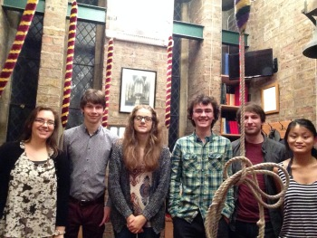

Peals and Quarters
2017/18
Thursday, 7 June 2018
1260 Plain Bob Doubles
St Lawrence, York, North Yorkshire (7-3-24 in A) in 39m
- Holly Barrett
- Lucy Williamson
- Simon Cumming
- Claire Reading
- William Brooke (C)
- Claire Pearson
First Treble: 1
Rung in celebration of the end of University exam season, and for Lucy, Claire P, Holly and Billy
completing undergraduate degrees.
Also rung with YCG's best wishes to Andy Blacklock and Ellie Maude for their wedding.
Saturday, 24 February 2018
1250 Cambridge Surprise Major
St Lawrence, York, North Yorkshire (7-3-24 in A) in 40m
- Caitlin Turpin
- Claire Reading
- Samuel Turner
- Lucy Williamson
- William L K Brooke
- Eric Wolever (C)
Rung to celebrate Sam's visit to York and his ridiculous ringing progress since we last saw him! :D
First of treble bob and first of minor: 1.
Saturday, 30 December 2017
1260 Surprise Minor
540 Norwich S Minor, 720 Cambridge S Minor
St Lawrence, York, North Yorkshire (7-3-24 in A) in 39m
- Charlotte Alford
- Claire Pearson
- Claire Reading
- Eric Wolever
- Lucy Williamson
- Ryan Mills (C)
To mark ten years and one day since Charlotte's first quarter peal.
First without a stay: 1
First Norwich S Minor: 2,3,4,5
Best of luck to those taking exams in January.
The Band
Friday, 8 December 2017
1320 Cambridge Surprise Minor
St Lawrence, York, North Yorkshire (7-3-24 in A) in 42m
- Anna-Lena Bulgrin
- William L K Brooke
- Claire E Reading
- Eric W S Wolever
- Claire L Pearson
- Lucy B J Williamson (C)
First Treble Bob Hunt: 1
First Surprise Minor as conductor: 6
Wednesday, 29 November 2017
1260 Stedman Doubles
St Lawrence, York, North Yorkshire (7-3-24 in A) in 39m
- Claire Reading
- Caitlin Turpin
- William L K Brooke
- Eric Wolever (C)
- Lucy Williamson
- Simon Cumming
First Stedman inside: 2, 5
First Stedman Doubles: 1, 4
First tenor behind: 6
Band L-R
Wednesday, 29 November 2017
1260 Plain Bob Doubles
St Lawrence, York, North Yorkshire (7-3-24 in A) in 39m
- Lucy Williamson
- Simon Cumming
- Claire Reading
- William L K Brooke
- Eric Wolever (C)
- Holly Barrett
First of Bob Doubles inside: 2
Band L-R